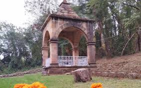
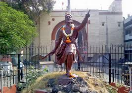
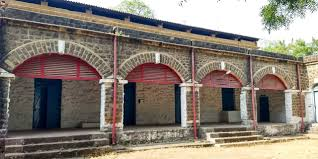
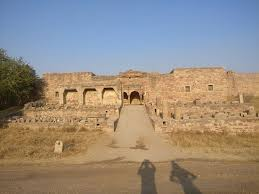
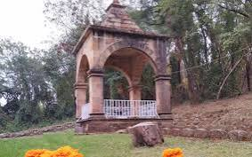
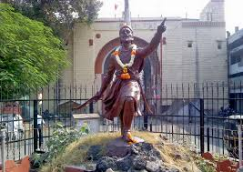
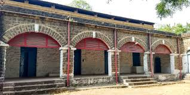
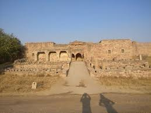

Sitabuldi Fort is one of Nagpur's most prominent landmarks, perched on a hill where the historic Battle of Sitabuldi was fought in 1817. Built in 1702 by Raja Bhakth Buland Shah, the fort later became a site of the Third Anglo-Maratha War between the Marathas and the British.
#Trivia: It is one of Maharashtra's oldest forts.
Inside the fort, visitors can find the chamber where Mahatma Gandhi was once imprisoned. There's also a military memorial honoring soldiers who died in the conflict. The fort is open to the public on national holidays like Independence Day and Republic Day. Visitors can also explore a display of historic weapons and artifacts from the Indian Army.
 






